2021年终总结
年底了，天天加班回来不好好躺着，开始折腾博客也是想效仿大佬，整篇大杂烩式的总结。现在服务器，域名都花钱买了，博客也弄起来了，那就打起精神，好好总结下马上就要过去的2021年吧。 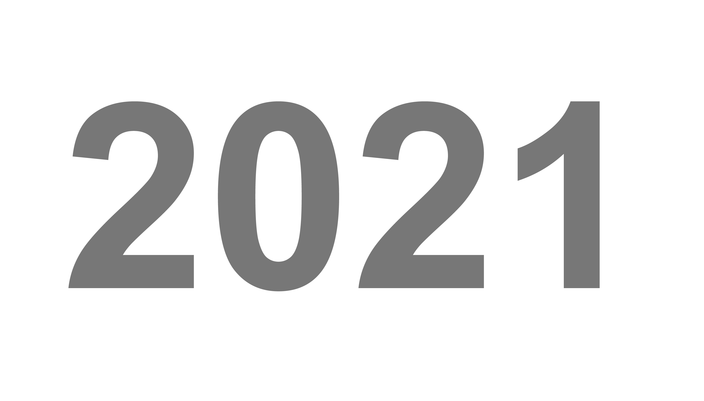
游戏 PlayStation
- 《天穗之咲稻姬》 去年年底买的光盘版，横板2D动作游戏，农村正，画风非常可爱，打击感也很好，白金用了三十多小时，已出回血，后面想刷刷了可能会在买回来。 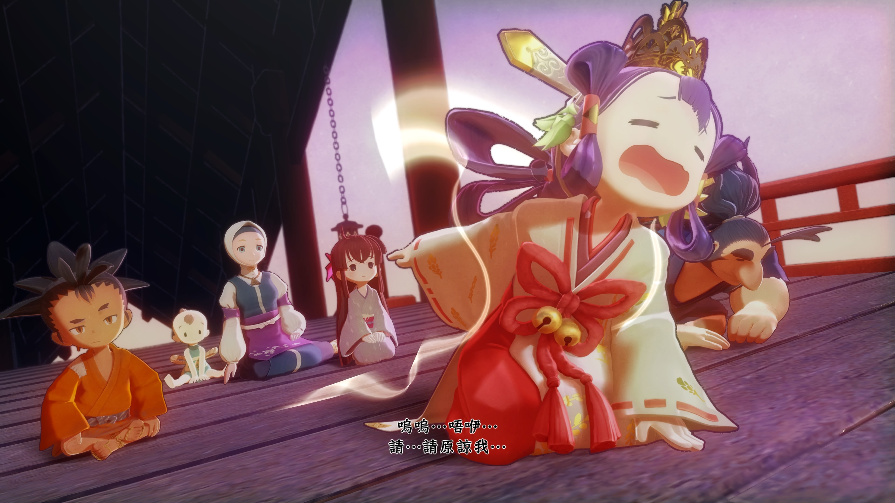
- 《奇异人生》 会免送的游戏，剧情不错，能感受下美国高中的校园氛围，PS上没中文，大学时在PC上玩过汉化版，白金神作，大概5小时就能白金。
- 《西游记之大圣归来》 海鲜市场88收的全新典藏版，典藏版都这么便宜，游戏质量之差也就可见一斑了，算是为了支持国产才买的，唯一的好处的可以无脑反击，二十多小时白金，自己留着吧，辣鸡游戏卖出去就是坑人。 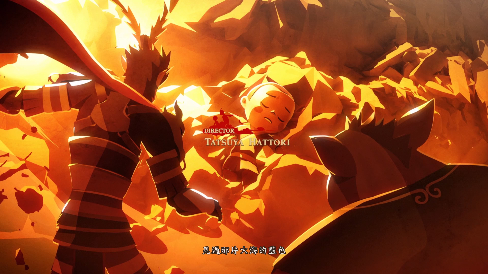
- 《行尸走肉：决定版》 收的光盘，包含了行尸走肉系列游戏的所有作品，玩下来就像体验了一部超长的丧尸剧，也是白金神作，通关即白金。 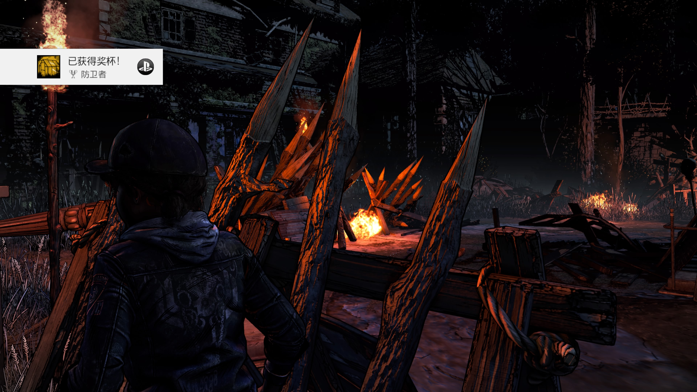
- 《行尸走肉：第二季》 为了刷白金才买的光盘，内容和上面的重复了。 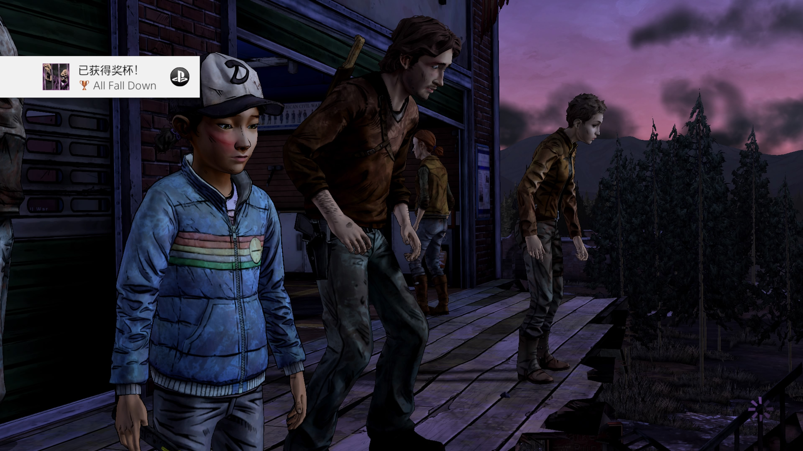
- 《行尸走肉：最终季》
同上。

- 《鬼泣5》 收的港版光盘，但中文兑换码已经被用掉了，好在动作游戏剧情不复杂，看着英文也能玩下去。在PS4 Pro上60帧如丝般顺滑，打击感超棒，但丁，维吉尔，尼禄一家依然延续鬼泣系列里父慈子孝的优良传统，非常有意思。 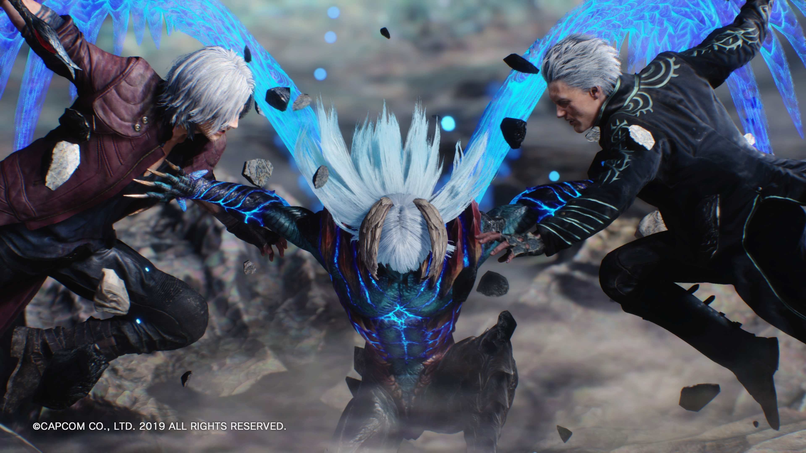
- 《尼尔：机械纪元》 白嫖舍友的数字版，白金神作，之前尝试好几次开坑，都半途而废了，过年期间没回家，在出租屋里试着又玩了一下，惊为天人，除了画质略差，跑图容易迷路，几乎没有缺点。剧情，音乐，2B小姐姐，战斗系统都非常棒，达成真结局后的感动更是让人难以忘怀，我宣布，年度最佳游戏就是它了。 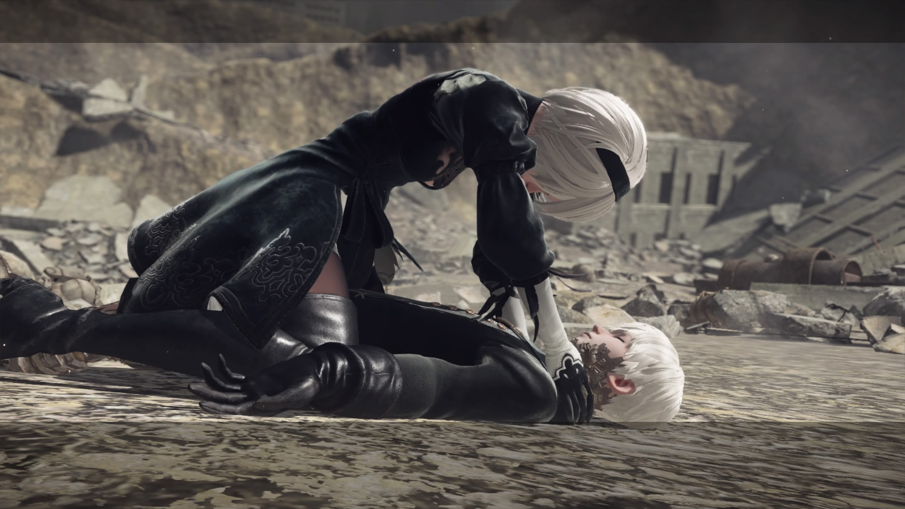
- 《对马岛之鬼》 白嫖舍友的光盘，游戏里风景不错，剧情体验一般般，印象最深刻的就是开篇蒙古人不讲武德，直接往武士身上扔燃烧弹，白金流程很长，大概60多小时。 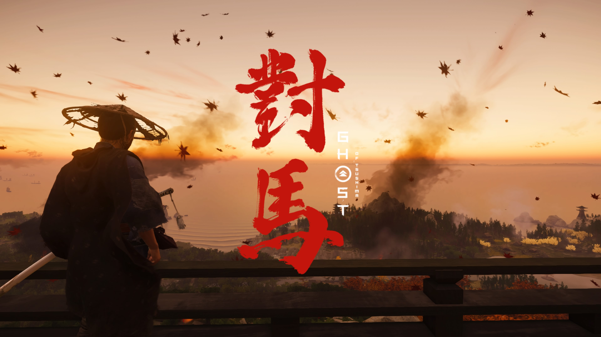
- 《权力的游戏》 会免游戏，TT社的白金神作，但剧情感觉一般，不推荐。 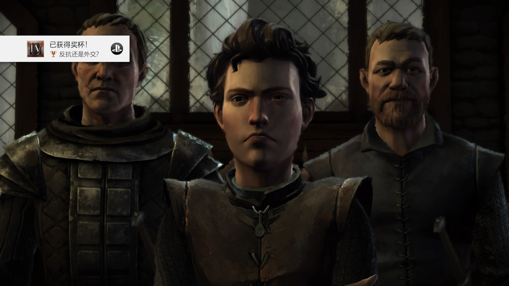
- 《宇宙机器人无线控制器使用指南》 白嫖舍友PS5+4K显示器时玩的，个人认为是目前为止PS5平台上最棒的独占游戏。游戏本身的定位是让玩家熟悉PS5手柄的各种新特性，但玩下来就会发现本作的游戏性不输《马里奥奥德赛》，游戏过程中收集的各种PS主机，掌机，外设更是让老玩家情怀满满。本作流程很短（毕竟白送的），白金下来大概四五小时，PS5必玩神作。
- 《漫威蜘蛛侠：迈尔斯 莫拉莱斯》 收的光盘，和PS上《漫威蜘蛛侠》玩法，体验基本一致，但流程偏短，个人不喜欢小黑蛛，也反感游戏里夹杂的BLM运动。PS4版有一个好处是可以免费升级PS5版，奖杯独立，支持同步存档，玩一遍白金两套奖杯还是挺爽的。 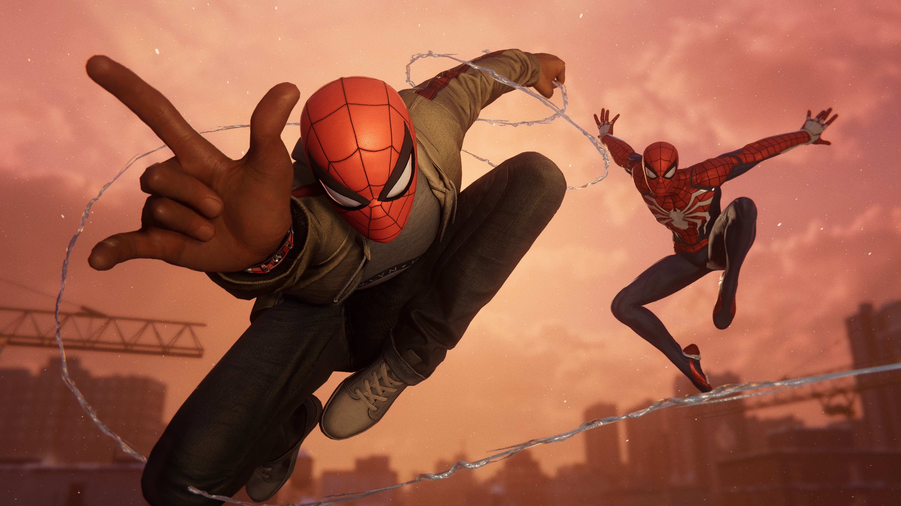
- 《十三机兵防卫圈》
香草社出品，必属精品。讲述13名少男少女驾驶机兵拯救世界的故事，玩法是AVG+战棋，比较新颖。游戏的美工非常出色，主角妹子每个都是老婆级别的，剧情的话脑洞比较大，不便剧透。白金大概30小时，光盘留着收藏，不出了。

- 《Coffee Talk》 会免送的小品级游戏，很无聊，看在是白金神作的份上才玩的。 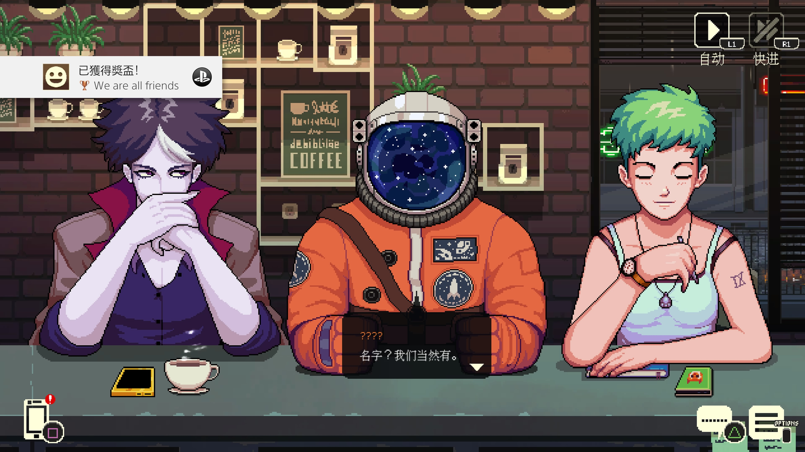 总结：玩了十四款游戏，白了十三个白金，2022年还抢不到PS5的话，我手里的PS4 Pro还可以再战几年。
读书!
纸质书
#####孔夫子
- 《骑车游北京》 在微博上看有人分享这本书里的路线，但网上很难买到全新的了，就去孔夫子上收了本旧的。书本身品相还可以，全彩印刷，部分内容已经过时了，但里面推荐的北京骑行路线都很不错，等天暖和了去尝试下。
- 《骑车游中国》 和上面那本是一个系列的，但范围扩大到了全国，路线也都动辄上百公里，就我目前的工作强度而言，不太可能有机会实践了，就当收藏吧。
- 《骑车游中国最美线路》 同上。
- 《红高粱家族》 莫言红高粱系列的合集，喜欢莫言老师各种带有魔幻色彩的高密东北乡故事，天马行空的同时又带有一种莫名的真实感，诺贝尔文学奖获得者实至名归。
- 《什么气味最美好》 莫言的散文集，里面有大量莫言对自己童年，工作生活的记录，十分有趣。里面记述的莫言母亲，和上个世纪大部分农村妇女一样，独自承担了各种苦难，平凡又伟大。正是莫言小时后农村的各种经历，让他的文字给同样来自农村底层的我一种亲切感，仿佛他记录的都是我还有我父母身边的故事。
- 《科学业绩的辩伪》 孔夫子上买书时，店家都是要单独算邮费的，一家店里多买基本，平均下来每本的邮费就能便宜一点。这本就是为了凑单买的，本身售价只有一两块钱。书是1982年出版的，是一本很久，很薄的小册子，带有一股那个年代旧书特有的墨香味儿。内容的话前半部分和标题差不多，论述了很多历史上像炼金术，永动机之类伪科学的东西。到中间提到了苏联时代行政干预科研，阻碍科技发展，然后话锋一转，开始抨击国内青年科技工作者刘亚光关于中药成分对心肌细胞修复作用的研究，指出其工作态度不认真，不服从组织安排，所作实验流程不严谨，不具有科学价值等等。按说作者樊洪业是正统科学史研究者，应该没必要对国内这么一个无名小卒着这么多笔墨，细究起来，作者写这本书其实都是为了和当时的作协主席杨沫进行论战。科学史研究者怎么就和作协主席正面刚上了呢？这就得看下面那本书了。
- 《不是日记的日记》 这是杨沫写的具有自传性质的报告文学，讲述了她在写书过程中受病痛困扰，然后偶然结识了“才华横溢”“年轻有为”的科学工作者刘亚光，患有心脏病的杨对刘研究的人参皂苷对心肌细胞的修复作用很感兴趣，在刘的“科普”下，认为他的研究前途无量，是国家实现四化的重要部分，并通过她的能量，为刘争取了大量资源。事实上刘的研究更像是民科，或者现在电视广告上的各种神药，并不受她所在单位的认可，甚至还受到了上面那本书作者的批评。杨发认为自己发现的科研“新星”受到了学阀的打压，充满“正义感”和对实现四化“使命感”的她便开始给国家高层上书，直至邓，李等人物，并在《人民日报》等报刊上发文，对樊上纲上线，要求组织进行严处。这些也引起了高层的重视，让当时的中科院院长方毅对此事进行调查，结论是樊并无过错。虽然此时官方已给了定论，但杨仍坚信自己慧眼识珠，并出版了《不是日记的日记》，为刘站台，后面还给刘争取了去美国的机会，让他逃离“受打压”的环境，继续进行研究。故事的结局是：刘出国后和杨逐渐断了联系，也没有发表过任何有价值的研究成果，杨可能认识到了自己的错误，虽然没有明确承认，但至死也不再提起此事。 科学研究必须从事实出发，要让专业的人做专门的事，不能因为坚信自己是个好人，对X无限忠诚，就认为自己看到的，听到的，支持的一切都是正确的，更万万不能因意见不一致，就给人扣“扣帽子”，致人于死地。刘如果晚生个二三十年，赶上区块链，元宇宙的大潮，没准还能掀起另一波风浪，再不行也能做个正能量自媒体，成为新一代长鱼侯。
中图网
- 《王小波全集》 第一次听说王小波实在大学选修课上，老师说她上学那个年代很多人都读王小波，希望我们也能读一读。
当当
- 《于谦杂货铺》 一般般，和《玩儿》相比更像是从网上随便搜刮了一堆有的没的，然后凑了一本书，听听有声版催眠还凑合，纸质书谁买谁上当。
- 《于谦动物园》 同上，一个系列的。
- 《于谦小酒馆》 同上，一个系列的。
- 《郁达夫作品精选》 想看故都的秋，就买了这本郁达夫作品集。达夫写小说的文笔很好，很多小说都有自传性质，有很多内心的剖析，读起来给人一种亲切感，仿佛里面讲的就是自己的心路历程。但是，当我看到他描写家道中落时“只能让母亲带长工到各地乡下收租”，“三任妻子”，“十个孩子”时，就知道我和他根本不是一个世界的人了。
电子书
- 《王小波全集》 读了小波先生的杂文后，就一直把他当作精神导师。年初去他的墓地拜祭了一次，以后还要反复拜读先生的作品。
- 《王小波传》 粉丝写的王小波传记，最心疼的是小波先生独自一人在顺义的房子里犯了心脏病，痛苦挣扎了几个小时才去世。唉，天妒英才，大家也多保重身体吧。
- 《黑蜥蜴》 江户川乱步的推理小说，还不错。
- 《天浴》 严歌苓的小说集，文笔很好，内容也有深度。
- 《杨显惠命运三部曲》 《夹边沟记事》，《定西孤儿院》，《甘南纪事》。前两部可以了解那个时代的惨烈，后者则介绍了藏区风情。
- 《司马迁的记忆之野》 刘勃老师的大作，在他笔下，汉武帝时期比西方大航海时代更具开拓精神，历史类年度最佳。
- 《活着回来的男人：一个普通日本兵的二战及战后生命史》 一般般，简单了解了日本战俘在苏联的情况。
- 《Go语言编程》 Go语言入坑第一本书，到现在也没完全看完，立个flag，一月份至少读完一遍。
- 《为美好的世界献上祝福》 晓枣的轻小说，正传17本，外传5本，读了将近三十小时，故事很搞笑，想着动漫出太慢了，就先把原著读一遍。
- 《三国配角演义》 看舍友发曹操好人妻，就又读了一遍这本书，感叹马亲王的脑洞是真的大。
- 《郁达夫杂文集》 里面好多时事预测都翻车了，再看看现在各种自媒一本正经的扯，你看人革命家说话都不一定靠谱，你们就别瞎BB了。
动漫
动画
- 《心灵的声音》 音乐带感，画风鬼畜，适合吃饭时看，但内容又有好多重口味的地方。。。
- 《七龙珠》 回忆童年。
- 《爆肝工程师的异世界狂想曲》 一般般，一路开挂，后面和工程师没啥关系。
- 《这就是声优》 李依李首部担任主角的动漫，可以了解下日本声优的工作现状。
- 《日本沉没》 不知道奶飞为什么搞了部动漫，OP是久石让写的，很不错。
- 《为美好的世界献上祝福》 周日学累了随便找来看的动漫，没想到一发不可收拾，一口气看了两季+OVA+剧场版，剧情轻松幽默，异世界动漫的入坑神作。
- 《Re0：从零开始的异世界生活》 开始看了第二部第一集，完全看不明白，就坑了。后面从第一季开始看，必须年度最佳动漫，看起来和RPG式的游戏流程，男主，女主还有配角们的各种惨死，多次重开之后的good ending给人带来非常的冲击，音乐也非常赞，《stay alive》和《STYX HELIX》无脑循环中。
- 《Overlord》 异世界四重奏补完系列，画面精良，但不是很喜欢这类网游情节。
- 《幼女战记》 异世界四重奏补完系列，讲的是另一个时空的欧陆二战，作者对苏联有很大敌意，各种抹黑。
- 《异世界四重奏》 把上面四部异世界动漫主角放到一个学校里面，看艾米莉亚和惠惠对话感觉就很神奇。
- 《乱步奇谭》 有点类似《神探夏洛克》，时间放到了现在，主角变成了明智小五郎的助手小林（CV：高桥李依）。小林在动画里是一个长得很可爱的男孩子，李依李给他的配音个人感觉可爱程度仅次于高木同学。
- 《异世界超能魔术师》 很无聊，冲着李依李才看。
- 《租借女友》 没想到废柴女神雨宫天的声音正经起来这么好听，李依李配的樱泽墨存在感太低，而且应为和她反差过大，不看介绍完全想不到是她。
- 《关于我转生变成史莱姆的这档事》 一路无脑开挂，妹子形态的史莱姆还是挺可爱的。
漫画
- 《王者天下》 从去年开始追的，里面对战争的描写要比国内各类动漫，电视剧详细的多。
- 《擅长捉弄的高木同学》 狗粮神作，期待第三季动漫。
- 《为美好的世界献上祝福》 SUBA补全系列，很不错。
追剧
- 《日本沉没：希望之人》 日本沉没系列的作品真不少，这部里面中国还算正派。
- 《言灵庄》 故事一般，不算吓人。亮点在于这部剧像是老婆合集，里面的女主大部分在其他剧看到过，《轮到你了》中的大反派黑岛沙和，《全裸监督》中的王牌女友黑木香，《下辈子再好好过》里的淫娃大森桃江。。。
- 《全裸监督：第二季》 没第一季那么燃了，西村的事业由盛转衰，但还是很好看。
- 《毒枭：墨西哥 一~三季》 墨西哥貌似没死刑，大反派进了监狱过的也挺自在的。
- 《万物生灵》 将英国乡村兽医的故事，很治愈。
- 《白莲花度假村》 揭露人性之恶。
- 《我的巴比伦男友》 小时候幻想的混血王子真的出现了，脑洞可以，但有点虎头蛇尾。
- 《龙樱第二季》 依旧很燃，阿部宽骑摩托超帅。
- 《下辈子我再好好过第二季》 讲述海王和淫娃的故事，尺度很小，还有点治愈。
- 《天国与地狱》 罪犯与刑警互换身体，故事挺有意思的。
- 《逃避可耻但有用 加油人类》 gakki出品，必属精品，恭喜新垣结衣和星野源结婚。
- 《十七岁初识禁果》 看名字以为尺度很大，实际是很不错的性教育片，完全没有需要和谐的地方，而且里面妹子很漂亮。
- 《好想做一次：第二季》 和上面差不多，但有点反感里面华人的形象，为什么美国华人表情都那么夸张。
- 《心灵的声音》 电视剧版，毕业之后看的唯一一部韩剧，没有动漫版里那些重口味的情节了。
- 《性爱自修室：第三季》 很黄很暴力。
电影
- 《火口的两人》 末日下的思考，尺度非常大。
- 《毒液：1~2》 漫威的爽片。
- 《尚气与十环传奇》 还可以，要是里面的华人再帅一点就更好了。
- 《浪客剑心》 随便看的，暂时不准备入坑。
- 《王国：北方的阿信》 李尸朝鲜的续作，讲述了僵尸病毒是怎么扩散的。
- 《三国志新解》 冲着桥本环奈看的，无聊。
- 《让子弹飞》 明明是姜文不怎么看重的商业片，现在都快被人们拿去申遗了，希望《鬼子来了》也有这待遇，没准还能推广波唐山话。
- 《吉祥如意》 大鹏的文艺片，题材比较沉重。
- 《波斯语课》 很好的反战片。
- 《姜子牙》 还行，没啥印象了。
- 《天气之子》 新海诚的作品，还可以。
- 《王者天下》 剧场版，桥本环奈演河了雕非常合适。
- 《蜘蛛侠：英雄远征》 还可以
- 《蜘蛛侠：英雄归来》 还可以
- 《二龙湖往事：惊魂夜》 浩哥已经成为四平的名片了，当戏剧看挺好的。
- 《冲出战俘营》 一般般。
- 《狗果定理》 谦哥主演的最烂的片，不知道从哪弄条傻狗，在剧里还非得给拍成神犬。
- 《怒火：重案》 这么多年，锋哥还是那么帅。
- 《郁达夫传奇》 发哥演的，很不错的传记片。
- 《莫斯科陷落：1~2》 有点莫名奇妙，不推荐。
- 《十二公民》 讲述了司法公正的重要性。
- 《秦明：生死语者》 好好的小说，改成电影电视的时候非得给你加点搞基啊，甜宠啊，让人感觉不伦不类的。
- 《有话好好说》 姜文主演，当前的瞿颖身材真好。
- 《索比堡》 国外冲出战俘营的故事。
- 《哥斯拉大战金刚》 俩大怪兽打架，群众喜闻乐见。
- 《三枪拍案惊奇》 小沈阳主演的烂片，片尾曲倒挺经典的。
- 《追虎擒龙》 古天乐主演的反黑反腐片，讲述了香港廉政公署的建立。
- 《鬼吹灯之龙岭迷窟》 还行，不如原著。
- 《黄皮子坟》 还行，不如原著。
- 《猎杀T34》 苏军战俘开坦克反杀的故事，最后的对战宛如中世界骑士决斗，非常精彩。
- 《浴血无名川》 很一般，不推荐。
- 《扫黑：决战》 姜武主演的反黑反复片，很精彩。
- 《拯救列宁格勒》 苏版敦刻尔克大撤退。
- 《斯大林格勒》 战场上，对错很难界定，只有对祖国的热爱是不变的。
- 《坦克战》 开T-34去莫斯科，像伟大慈父做汇报。
- 《盲探》 华仔主演，还可以。
- 《人潮汹涌》 同上。
- 《炮手燃魂》 垃圾，把明日壬辰战争拍成这吊样。
- 《过年好》 赵本山的作品，拍喜剧就拍戏剧，别总想着升华。
- 《逃狱兄弟》 一般般。
- 《除暴》 还不错，但总感觉王千源好丑。
- 《拆弹专家2》 和第一部没啥关系，讲述刘德华扮演的拆弹专家遭受不平等待遇后黑化，再白化的故事，很精彩。
- 《春风沉醉的夜晚》 秦昊主演的同志片，秦昊是受。片子尺度很大，有大量激情床戏，看完我有点不太敢直视秦昊的其他作品了。
- 《东宫西宫》 王小波任编剧的电影，也是同志题材，和上面比非常文艺。
徒步
西山这片的防火道都走遍了。
- 曹雪芹小道 夏天走的，路上非常多马陆，密恐地狱。
- 温泉-香山公园 秋天看红叶时走了一遍。
- 白家疃-望京楼-克勒峪-三家店 冬天第一次徒步时走的，完成了海淀-石景山-门头沟的快速穿越，还探索了北京核爆观测遗址。
逛景区
都是和DR赵一起逛的
- 太庙-北海公园
- 颐和园
- 八达岭长城
- 北京植物园
- 北京动物园-海洋馆
骑行
前半年骑得比较多，后半年买了摩托就很少骑了，2022还得再捡起来。
- 军庄-永定河-石景山-天安门-北京站
- 长安街刷街
- 十三陵水库
- 二刷妙峰山
搬家
老旧小区->没集中供暖的农村平房
工作
升了一次级，加了两次薪，但依然想跳槽。
摄影
2021只带相机出去拍了两次星空，2022还得多努力。
-
中山村银河

-
双子座流星雨

还有很多图片文字要补充 To be continue…